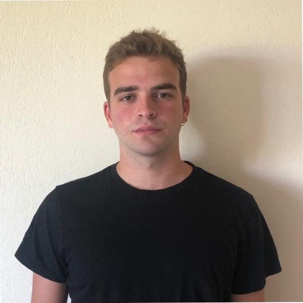

A
Reliable reasoning
Formalization and structured verification methods that make language-model reasoning easier to inspect, test, and repair.
PhD student at Georgia Tech
I study how to make AI systems more reliable, private, and efficient—from verifiable reasoning in language models to privacy-aware representations and distributed training.
I am a PhD student in Machine Learning at Georgia Tech. Previously, I worked on privacy-preserving AI at Protopia and conducted research with the LINC and Swarm Labs at UT Austin.

A
Formalization and structured verification methods that make language-model reasoning easier to inspect, test, and repair.
B
Information-theoretic transformations and reconstruction attacks for understanding the privacy–utility boundary of learned embeddings.
C
Tokenization, resource allocation, and distributed training methods that reduce the computational cost of modern learning systems.
ICLR 2026
Prithwish Jana, Kaan Kale, Ahmet Ege Tanriverdi, Cruise Song, Sriram Vishwanath, Vijay Ganesh
Preprint
Oguzhan Baser, Mert Sozen, Kaan Kale, Sandeep Chinchali, Sriram Vishwanath
Preprint
Ninghan Zhong, Ahmet Ege Tanriverdi, Kaan Kale, Sriram Vishwanath
ISIT 2026
Noel Elias, Homa Esfahanizadeh, Kaan Kale, Sriram Vishwanath, Muriel Médard
GLOBECOM 2025
Oguzhan Baser, Kaan Kale, Po-han Li, Sandeep Chinchali
Preprint
Jay Roberts, Kyle Mylonakis, Sidhartha Roy, Kaan Kale
Preprint
Kaan Kale, Kyle Mylonakis, Jay Roberts, Sidhartha Roy
Interspeech 2025
Oguzhan Baser, Ahmet Ege Tanriverdi, Kaan Kale, Sandeep Chinchali, Sriram Vishwanath
CoRL 2024
Oguzhan Akcin, Ahmet Ege Tanriverdi, Kaan Kale, Sandeep Chinchali
ISIT 2024
Kaan Kale, Homa Esfahanizadeh, Noel Elias, Oguzhan Baser, Muriel Médard, Sriram Vishwanath
Interspeech 2024
Oguzhan Baser, Kaan Kale, Sandeep Chinchali
May – Aug 2026
Protopia AI · London
Built distributed training and fine-tuning infrastructure for large language models, with a focus on long-context memory efficiency, parallelism, and privacy-preserving deployment.
Nov 2024 – Dec 2025
Protopia AI · Remote
Developed and evaluated privacy-preserving representations for language models, including reconstruction attacks, mutual-information metrics, and scalable PyTorch experiments.
2023 – 2024
UT Austin · LINC & Swarm Labs
Worked on privacy-aware learning, information-theoretic representation learning, and resource allocation for networked intelligent systems.
Research is only part of the picture. I also DJ, play piano, produce music, and get out on the water whenever there is enough wind to kitesurf.
Good sets, windy days, and hard research problems all reward the same thing: timing.
Let’s talk research